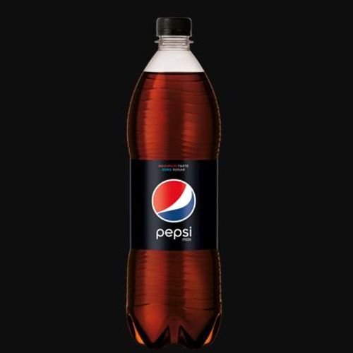

JÓ ÉTTEREM
— MENÜ —

Pepsi
500Ft
A PepsiCo cég a Pepsi márkájú üdítő gyártásához csak az ital alapjául szolgáló kólasűrítményt gyártja.

Fanta
600Ft
A Fanta egy gyümölcsízű üdítőital, amelyet a The Coca-Cola Company gyárt 1940 óta.

Víz
100Ft
A palackozott víz választahtó szénsav-mentes, enyhén savas és szuper dús változatban.
Sör
500Ft
A sör malátából, valamint bizonyos pótanyagokból készített, szén-dioxidban dús, legtöbbször alkoholtartalmú ital.

Bor
1000Ft
A bor a bortermő szőlő Vitis vinifera fürtjeinek kisajtolt, édes levéből alkoholos erjedés útján nyert ital.

Házi Pálinka
600Ft
A pálinka eredetvédett gyümölcspárlat, melyet Magyarországon és négy osztrák tartományban állítanak elő.